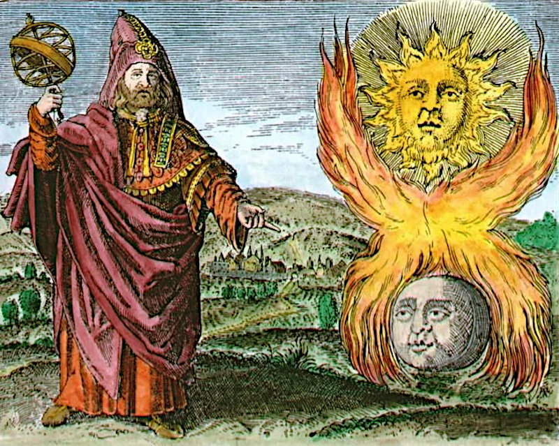
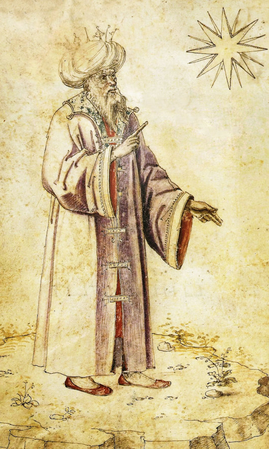
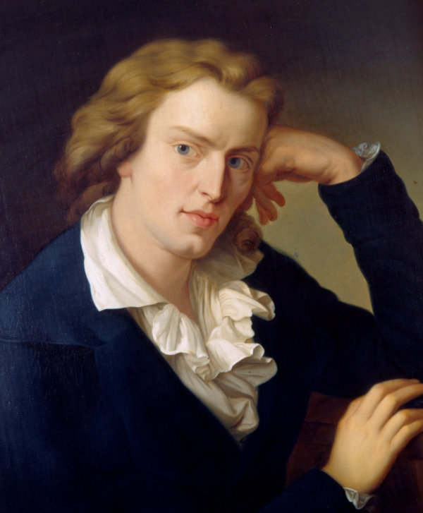
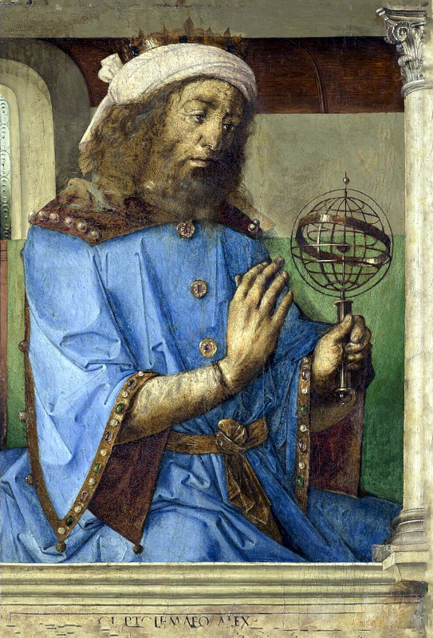
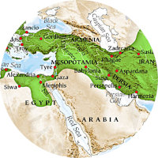

Hermes Trismegistus
depicted in a 16th Century Emblem.
Hermes can usually be recognised by having one hand raised to the heavens and the other pointing down to earth.
 The character
The character of man is his
guardian spirit
(daimon).
- Heraclitus c.535–c.475 BC
The destiny
of man is in
his own soul.
- Herodotus c.484–c.425 BC
of man is in
his own soul.
- Herodotus c.484–c.425 BC
Welcome To Astrologia Hermetica
Over the course of a few decades of the author's research into the nature of astrology, much material has come to light revealing its true character. Through more than fifty years of study into Numerology, Astrology (eastern, middle eastern and western, namely Hindu, Islamic, and western modern, renaissance, medieval, and ancient), Tarot, Symbolism, Theosophy, Anthroposophy, Philosophy, Theology (eastern and western), Mantic, Alchemy, Hermetism and any other related fields, commonalities have been discovered which made reconstruction of ancient Hermetic methods possible, especially in Astrology.We are born into a world, a universe, a cosmos, so vast it is incomprehensible in its entirety. That vastness is full of things that affect us, both directly when near, as well as indirectly, when distant. The perception of these things relies upon the occurrence of physiological phenomena for each and every one of us. Yet, perception is not always accurate. That which we have perceived is not necessarily a true representation of that which was being perceived. With the help of Astrology, especially by learning and practising it, both the skill and level of perception can be increased remarkably.
Even if it were accurate, that which we receive is really only an impression, idea, image, or "cognate" in modern parlance, of the object and not the object itself. This is where we come into trouble for there are other processes at work which can modify the result. This is where astrology comes into the picture. Because astrology is the study of the cosmos, it is able to describe things in the cosmos in such a way that they are independent of personal perception. As an example, astrology says that Mars is such and such but our perception of the planet in the sky is not going to yield that same information about Mars.
So where did astrology get this arcane knowledge?

Books, Books, Books
This most
beautiful system
of sun, planets,
and comets, could
only proceed from
the counsel and
dominion of an
intelligent and
powerful Being.
- Isaac Newton
- Linda Goodman - "Linda Goodman's Sun Signs"
A brilliantly insightful piece of writing which holds tightly to the symbolism of the signs. Although marketed as entertainment, it is still a serious work which has stood the test of time.
- Marc Edmund Jones - "Astrology, How and Why It Works"
Due to its technical nature is rather heavy reading for a young person but inspiringly serious about the subject.
- Alan Oken - "As Above, So Below"
A great way to immerse oneself in the esoteric side of astrology. With a title like that, it was obviously heavily inspired by Hermetism.
- Margaret Hone - "The Modern Textbook of Astrology"
A thorough coverage of almost all the basic and advanced methods of astrological theories and techniques. Anything other than modern, though.
- Bernie Ashman "Astrological Games People Play"
Yet the main turning point came some years later from reading Bernie Ashman's "Astrological Games People Play" where he touched upon how it is that different modern astrologers using different techniques still manage to come up with similar delineations. His explanation was that a chart is built of themes which overlap and show similarities. With a bit of contemplation of this phenomenon, one is easily lead to the notion that the different methods prevailing in the modern world very likely have a common source, which is being revealed and elucidated here.
- Jim Tester "A History of Western Astrology"
To learn more about the history, Jim Tester's "A History of Western Astrology" was an impressive work for the time and opened many doorways to otherwise unknown material.
- Fred Gettings "Dictionary of Astrology"
The same applies to Fred Gettings' "Dictionary of Astrology" with its thoroughly comprehensive and comprehendable details of all facets of the science.
- Ronaldo Guilherme Gurgel Pereira "The Hermetic Logos: Reading the Corpus Hermeticum as a Reflection of Greco-Egyptian Mentality"
originally written as a thesis which earned him a PhD title. This work made it clear that astrology is intimately entwined at the very inception of Greek and especially Hermetic philosophy.
Incidentally, Hermes Trismegistus after whom Hermetism is named, is traditionally the god and inventor of writing, astrology, alchemy, medicine, magic and philosophy. In some parts of the legend he is also the Logos, the Word. It is no surprise that his message is to be found in writings and books.
All of these writers took astrology seriously and did a massive amount of research which they kindly made available to the world.
Popular Culture, Youthfulness and Optimism
All of this is often considered to be a part of popular culture and very likely always was. There is no doubt that the so-called popular culture is actually of interest, first and foremost, to younger people, less trammelled by hardships and starting to explore life and all which it has on offer. For some, this extends into intellectual optimism, wanting to investigate what their predecessors have discovered and contributed to the pool of human knowledge. In days gone by, popular culture took the form of words, whether as poetry or song, to transmit cultural ideas of what was moralistically valuable and generally for the good of humanity.

Schiller
 Novalis
Novalis
 Shakespeare
Shakespeare
Another young chap who reputedly had his popular plays on stage when he was in his twenties was William Shakespeare (1564-1616) who is now regarded as the greatest writer in the English language. Yet, at the time his plays were written and performed, Shakespeare had ruffled many of the feathers of those who were against this "upstart crow". It has also been picked up that most, if not all of Shakespeare's writing is riddled with Hermetic references.
In a way, Hermetism belongs to this definition of popular culture, for it offers an optimistic outlook on humanity and the world at large. Its "heroic" figure which introduced a path to follow was the mythical Hermes Trismegistus. A lot of what is presented within the framework of that philosophy has been handed down through the ages and rediscovered by every later generation. Yet, as with all popularity, these optimistic ideas are dismissed by authorities as being immature and unrealistic, not because they are, but because they challenge the status quo. They "rock the boat" and bring about change. As those younger enthusiasts grow older and wiser they often incorporate their youthful ideas into mainstream acceptability.
Yet popular culture, as an idea, is better understood as something which attracts and amuses people in such a way that it touches their spirit and spirituality. The modern idea that it is somehow equal to entertainment, simply to while away the time, is to say the least, the exact opposite. Instead, it addresses a personal need to search for more in the world than is immediately at hand. Sometimes, this is so obscure that a lot of effort is required to "discover" these real gems. Hermetism falls into this category. The knowledge of it is not automatic, yet it is readily available to those who are truly interested.
Let's Look at the Stars
Celestial observation and astrology itself may well be the first ever intellectual pursuit of humans struggling to make sense of the world surrounding them. The ultimate aim was to find more order and purpose in an otherwise mundane and seemingly flat existence. Ironically, this ancient system indeed described the cosmos as flat, which within the framework of astrology and astronomy, it was, and still is. Yet, it is better known as the "celestial plane of the ecliptic", a totally necessary and acceptable concept in astronomy facilitating current calculations of spherical trigonometry to determine planetary positions.
Babylonian Venus Tablet, Part of Enuma anu enlil
What Astrology Says
Central to the topic is a message broadcast since the earliest form of astrology and its associated philosophy. It was directly and intentionally levelled at a particular attitude. It warned against living in the material world as if it, and all its attendant flaws and apparent evils, were somehow inevitable and preferable to another more promising outlook.A lot of this gloom and doom about the world is distinctly connected to Mesopotamian celestial divination going back about four thousand years. The ancient texts embraced the idea of terrible things coming from the skies which were to be seen only as omens requiring interpretation.
Out Steps Hermes Trismegistus
Perhaps as a reaction, a new form of thinking emerged, turning the tables such that if the energies can flow through channels from the heavens to the earth, then the pathway would also be open to head in the opposite direction, towards the Divine Cosmos.Regarding the origin of this new thinking, we encounter a mysterious figure known since the ancient world as Hermes Trismegistus. He was cast from a unity of the Greek God Hermes and the Egyptian God Thoth. At least from about the third century B.C., perhaps even centuries earlier, Hermes Trismegistus had authored many books mentioned or quoted in contemporary or later works.
At one time, an astrologer working in official capacity was required to carry with him the forty-two books of Hermes Trismegistus on public parades. These works have not survived in Greek into the modern world, but the content and knowledge had been maintained in various translations, mostly in the Arabic or Islamic world. The most famous and widely used one of these texts in the middle ages was entitled Poimandres. In a very Hermetic way, the work gives details of the Cosmogony and general tenets of its philosophy.
Yet, the most famous collection of Greek Hermetic manuscripts would be the Corpus Hermeticum. It consists of seventeen separate treatises translated into Latin by Marsilio Ficino and Lodovico Lazzarelli during the 15th Century under the patronage of Cosimo de Medici. Hermetic texts were also found in another important collection, the Nag Hammadi discovered in the Upper Egyptian town of that name in 1945.

Alexandrian Empire

Alexandria c.30 BC

Pharos, Alexandria
The Hellenisation of Ancient Egypt
A syncretism of ideas occurred from the time of Alexander the Great's conquest of the vast Achaemenid Empire which stretched all the way from Macedon in modern Greece, across Mesopotamia and Persia all the way to India. Unlike during the previous reign, the influx of Greek migrants resulted in a massive interchange of ideas already highly developed in those places.So the root of study here lies in the ancient world and is based in Alexandria in Egypt, famed place of learning with its massive library, constituting in fact, the entire city acting as a stronghold of books and education. This new city acted as the leading light for the vast empire and was a magnet for intellectual pursuits from all parts.
Alexandria was also famed for its lighthouse known as Pharos, the first lighthouse ever to exist and which became the prototype for all others since its construction. It was destroyed in the 14th century and at that time was the second oldest remaining of the Seven Great Wonders of the Ancient World.
When Alexander the Great established the city, the old town, Rhakotis, became the Egyptian quarter into which the Egyptian aristocracy who had been the former rulers, were confined and subsequently converted into a priestly caste only responsible for administering Egyptian religious issues. The interchange between these priests and the intellectual Greek migrant settlers led to the development of hybrid Greek philosophy, education, religion and knowledge derived from Egyptian concepts and made Greek for the new audiences.
The Egyptian concepts clashed with the established Greek outlook on the world. By Greek understanding, ideas needed to be rigidly formed, immutable.and learnable. Egyptian concepts on the other hand were more like attitudes and approaches in a steady stream of thought.
Greek ideas, such as what something actually is, were superfluous and irrelevant to the Egyptian mind. As a result, the Greek intellectuals persisted with their attempts at understanding and introduced a whole new philosophy, coining new terms and extending existent ones in order to syncretise the Egyptian and Greek bases.
Those newly formed Greek ideas and their later Latin counterparts are still present in modern western philosophy, and general knowledge, and will be explained when they are encountered all through the present work at hand. For instance, the most important one, overall, would be the term Logos. For the Egyptians it represented that steady stream of thought mentioned earlier. For the Greeks it was a thing of substance (ousia) and meant divine light and discourse emanating from and being God.
Hermetism
Who Knows Himself, Knows the All
(Hermes Trismegistus)
The writings attributed to Hermes Trismegistus over time came to be known under the umbrella term of Hermetism, or sometimes Hermeticism, which developed many parallel disciplines. In modern scholarship, these writings are called Hermetica organised as two groups, philosophical and technical. The first group comprises texts based upon an Egyptian style of story telling from one who knows informing another who doesn't. They are regarded as religious texts about the Divine and the Creation of the Cosmos.
The technical Hermetica on the other hand can be safely considered as having taken a more practical approach to seeing and experimenting with the physical manifestations of the natural world, albeit entwined with the divine. The subjects covered included astrology, medicine, alchemy, magic, theurgy, spirituality, prediction and religious ritual. Since these run parallel to each other, studying one leads to greater insight into another.
Astronomical Clock in Prague showing the positions of the sun and moon in the zodiac
There are a lot of technical terms being used in the Hermetic arts and as already mentioned, the most fundamental would be that of the Logos which can mean in various contexts, speech, word, thought, light, time, boundlessness, formlessness or coming together. There is a Divine Logos penetrating everything in the Cosmos, as well as a Personal Logos in every creature.
It is through the Divine Logos that humans can communicate. It is the channel which facilitates the creation of an idea, as well as a stream of that idea, and ultimately as it touches upon the Personal Logos of another person, the detection of the idea and possible understanding of it.
The Logos in unison with the naturally physiologically associated speech and hearing organs outwardly expresses those innerly perceived contacts to both the Personal Logos and under some circumstances, the Cosmic Logos. In this manner, the Logos embraces a much broader field of potential communication.
According to Hermetism, humans are unique in the Cosmos for they have been divinely created by the Nous and recreated through Nature making them partly immortal and partly mortal. Within the framework of » The Four Levels of Personal Identity , the upper two immortal parts of Mind and Soul are from the divine Nous, while the lower two mortal parts of Body and World stem from Nature.
The natural and mortal part is bound to the lower, passive planetary worlds or spheres and by which entanglement, unconscious desires drive behaviour contrary to the Logos-Soul-Spirit. As the effects increase, negative planetary daimonic forces take possession of the person who without intervention becomes permanently bound to the material plane of Nature, completely unaware of reality. The Hermetic system provides the means for overcoming this plight.
Hellenistic Astrology

Claudius Ptolomaus
The leading authors who talk of Hermetic Astrology in the ancient Hellenistic world of Alexandria were Claudius Ptolomy (c.100 – c. 170 CE) and his contemporary, Vettius Valens (c.120 – c.175 CE). This was a few centuries after the earliest Hermetica appeared but by this time the astrology of their day had developed so far that their writing is still consistent with modern astrology.
 » Vettius Valens
» Vettius ValensWhen the Alexandrian Empire was conquered by Islam in the eighth century, many treatises were translated into Arabic and Persian and contain a lot of Hermetic Astrology. These in turn made their way into Latin translations and stood as the fundament of early European thought.
Being associated with Islamic philosophy over many centuries modified the Hermetica into magical, mystical, predictive (mantical), alchemical and medical pursuits. It is in these forms that scholars came to know of the supernatural intermingled with the divine. It was also the instigator of concern over its highly superstitious nature.
The Hermetic Astrology of the Hellenistic World
All modern astrology is rooted in the original precepts and techniques of the earliest Technical Hermetica. By comparing modern techniques to previous versions of astrology backwards through early-modern, renaissance, medieval and ancient, a continuity may be traced back to those roots. Luckily, at times, older writers actually mentioned when a technique was Hermetic, and others that it was derived from such. Here is a short list of those known to be peculiar to Hermetism. These are listed in the order presented on the menu bar shown on each page and is the recommended order for reading.» Fundament presents an outline of the Hermetic Philosphy and concepts.
» Symbols presents the Hermetical versions of astrological basics, including signs and planets.
» Cycles discusses and explains Hermetic Astrology rooted in Mesopotamia, then Hellenised.

» Identity and its Four Levels, carried through neoplatonism, shows how cycles can be used.

» Medicine and Hermetic Astrology known as Iatromathematics.
» Magic and Alchemical theory, symbols, techniques, philosophy and aims
» Vettius Valens shows how to interpret a chart.

» Timeline for the Ancient World
About
Hi, my name is Rod Schneider and I have created this website to illustrate how, with the help of astrology, that negativity can be converted into something more positive. The astrology being shown here is rooted in the most ancient inceptions derived from Hermetism. It is technical but in the hands of a practitioner already familiar with astrology has great potential to be helpful. There is also much help for non-astrologers to use astrology in a different manner, namely with cycles and phases.Comments and contributions are always welcome.
Contact: rodschneider35@gmail.com